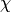
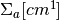
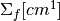
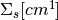

Material¶
The material class represents a unique material and its relevant nuclear data (ie, multigroup cross-sections) for neutron transport.
Public FunctionsMaterial(short int id)Constructor sets the ID and unique ID for the material.
- Parameters
- id -
the user-defined id for the material
~Material()Destructor deletes all cross-section data.
int getUid()Return the material’s unique ID.
- Return
- the material’s unique ID
short int getId()Return the material’s user-defined ID.
- Return
- the material’s user-defined ID
int getNumEnergyGroups()Returns the number of energy groups for this material’s nuclear data.
- Return
- the number of energy groups
double * getSigmaT()Return the array of the material’s total cross-sections.
- Return
- the pointer to the material’s array of total cross-sections
double * getSigmaA()Return the array of the material’s absorption cross-sections.
- Return
- the pointer to the material’s array of absorption cross-sections
double * getSigmaS()Return the array of the material’s scattering cross-section matrix.
- Return
- the pointer to the material’s array of scattering cross-sections
double * getSigmaF()Return the array of the material’s fission cross-sections.
- Return
- the pointer to the material’s array of fission cross-sections
double * getNuSigmaF()Return the array of the material’s fission cross-sections multiplied by nu
.
- Return
- the pointer to the material’s array of fission cross-sections multiplied by nu
double * getChi()Return the array of the material’s chi .
- Return
- the pointer to the material’s array of chi values
bool isDataAligned()Returns true if the data is vector aligned, false otherwise (default).
- Return
- Whether or not the materials data is vector aligned
int getNumVectorGroups()Returns the rounded up number of energy groups to fill an integral number of vector lengths.
- Return
- The number of vector-aligned energy groups
void setNumEnergyGroups(const int num_groups)Set the number of energy groups for this material.
- Parameters
- num_groups -
the number of energy groups.
void setSigmaT(double * xs, int num_groups)Set the material’s array of total cross-sections.
- Parameters
- xs -
the array of total cross-sections
- num_groups -
the number of energy groups
void setSigmaA(double * xs, int num_groups)Set the material’s array of absorption scattering cross-sections.
This method is intended to be called from
- Parameters
- xs -
the array of absorption scattering cross-sections
- num_groups -
the number of energy groups
void setSigmaS(double * xs, int num_groups num_groups_squared)Set the material’s 2D array of scattering cross-sections.
This assumes that the scattering matrix passed in has the standard notation: the ij element is for scattering from group i to j. For efficient caching of the elements of this matrix during fixed source iteration, the matrix transpose is what is actually stored in the material
- Parameters
- xs -
the array of scattering cross-sections
- num_groups_squared -
the number of energy groups squared
void setSigmaF(double * xs, int num_groups)Set the material’s array of fission cross-sections.
- Parameters
- xs -
the array of fission cross-sections
- num_groups -
the number of energy groups
void setNuSigmaF(double * xs, int num_groups)Set the material’s array of fission cross-sections multiplied by
- Parameters
- xs -
the array of fission cross-sections multiplied by nu
- num_groups -
the number of energy groups
void setChi(double * xs, int num_groups)Set the material’s array of values.
- Parameters
- xs -
the array of chi values
- num_groups -
the number of energy groups
void setSigmaTByGroup(double xs, int group)Set the material’s total cross-section for some energy group.
- Parameters
- xs -
the total cross-section (
)
- group -
the energy group
void setSigmaAByGroup(double xs, int group)Set the material’s absorption cross-section for some energy group.
- Parameters
- xs -
the absorption cross-section ( )
- group -
the energy group
void setSigmaFByGroup(double xs, int group)Set the material’s fission cross-section for some energy group.
- Parameters
- xs -
the fission cross-section ( )
- group -
the energy group
void setNuSigmaFByGroup(double xs, int group)Set the material’s fission cross-section multiplied by
- Parameters
- xs -
the fission cross-section (
)
- group -
the energy group
void setSigmaSByGroup(double xs, int group1, int group2)Set the material’s scattering cross-section for some energy group.
- Parameters
- xs -
the scattering cross-section ( )
- group1 -
the row index in the scattering matrix
- group2 -
the column index in the scattering matrix
void setChiByGroup(double xs, int group)Set the material’s chi value for some energy group.
- Parameters
- xs -
the chi value (
)- group -
the energy group
void checkSigmaT()Checks if the total cross-section for this material is equal to the absorption plus scattering cross-sections for all energy groups.
If the total cross-section does not equal the absorption plus scattering cross-section within SIGMA_T_THRESH (defined in openmoc/src/host/configurations.h) then this method exits OpenMOC.
std::string toString()Converts this material’s attributes to a character array representation.
The character array returned includes the user-defined ID, and each of the absorption, total, fission, nu multiplied by fission and scattering cross-sections and chi for all energy groups.
- Return
- character array of this member’s attributes
void printString()Prints a string representation of all of the material’s objects to the console.
void alignData()Aligns the cross-section data structures.